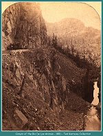
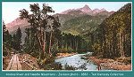
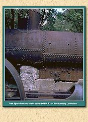
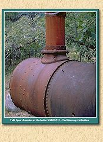
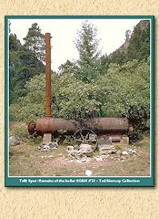

|
 |
Canyon of the Rio De Las Animas
1881 (Image 307) (195k) |
|
 |
Animas River and Needle Mountains
Jackson photo - 1882 (Image 306) (115k) |

|
Silverton,Colorado
1900 (Image 267) (142k) |

|
Stage road Between Silverton and Ouray at Red Mountain
1889 (Image 245) (162k) |

|
Early view of smelter in Durango, Colorado
1882 (Image 0010) (146k) |

|
Near Durango, Colorado
1883 (Image 0043) (49k)) |
|
 |
Boiler of Silverton Northern Locomotive #32
at Tefft Spur
(Image 0055) (71k) |
|
 |
Boiler of Silverton Northern Locomotive #32 at Tefft Spur
(Image 0057) (88k) |

|
Boiler of Silverton Northern Locomotive #32 at Tefft Spur
(Image 0058) (95k) |

|
Remains of SRR Combine Red Mountain
at Tefft Spur (Image 0059) (85k) |

|
Boiler of Silverton Northern Locomotive #32 at Tefft Spur
(Image 0060) (83k) |

|
Tefft Spur between Silverton and Durango
(Image 0061) (69k) |

|
Open fire box of locomotive #32
(Image 0062) (57k) |
|
 |
Boiler of locomotive #32 at Tefft Spur
(Image 0063) (88k) |